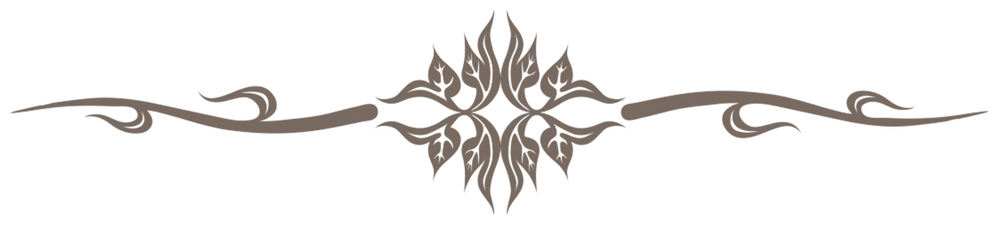
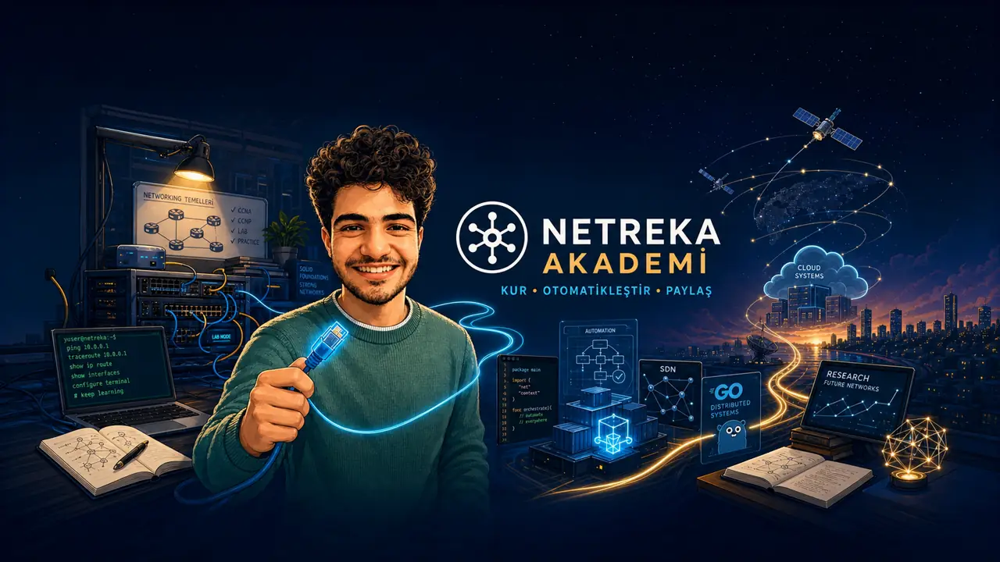

Knowledge
Start from documentation and primary sources, then record what was understood and what remains uncertain.
Computer Engineering Student @ OMÜ
Computer Engineering Student | Networks, Software & Experimental Systems
I document network automation labs, Go service prototypes, and controlled experiments with DTN and satellite-network emulation.
Selected work includes SR Linux and Containerlab automation, Go services, ION-DTN/NetSatBench experiments, Turkish technical videos, and a public reading list.
Background: calibrated 8-satellite circular-reference model, accelerated for visualization; not live telemetry.
Yeni · Torino / Erasmus Politecnico di Torino Günlükleri
Working Principles
I try to keep each project small enough to inspect and documented enough to review.
My aim is to learn from primary sources, test claims where possible, and share the assumptions and evidence behind the result.
Start from documentation and primary sources, then record what was understood and what remains uncertain.
Explain work without assuming the reader already knows the tools, context, or vocabulary.
Turn reading into a small implementation, a repeatable check, or a useful note.
Profile Map
This portfolio groups network lab practice, programmable infrastructure, Go prototypes, DTN/NetSatBench experiments, and technical communication. The pages distinguish current results from plans.
Routing, switching, wireless, security, and troubleshooting exercises developed through CCNA/CCNP study and lab practice.
A documented Nokia SR Linux and Containerlab environment with Ansible roles and state-verification tasks.
Small projects used to study REST/gRPC interfaces, messaging, replication, persistence, and observability in Go.
Current study includes DTN and NetSatBench experiments, together with reading and scenario design around NDN/ICN and LEO/NTN systems.
A documented Nokia SR Linux and Containerlab environment with Ansible roles and state-verification tasks.
Go and PostgreSQL prototype implementing JWT, RBAC, validation, filtering, pagination, audit logs, and a local Docker setup.
Single-leader replicated-storage prototype with mTLS gRPC, heartbeat-based member detection, disk persistence, and Prometheus metrics.
Learning-oriented Go microservices project using RabbitMQ, gRPC logging, Docker configuration, Caddy, PostgreSQL, and MongoDB.
Step-by-step Turkish NetSatBench guide covering Docker, Etcd, VXLAN, Linux tc/netem, routing, and iperf3 checks.
Six-node lab scaffolds for four DTN stacks under a shared synthetic schedule, plus separate NetSatBench–ION integration work. Cross-stack comparison remains planned.
Reading notes and a planned ndnSIM workflow for studying forwarding, caching, and Interest/Data behavior.
Go-based protocol experiments covering TCP/UDP clients and servers, HTTP services, DNS lookup, ICMP diagnostics, CIDR utilities, concurrency, timeouts, and instrumentation.
CC1352R Contiki-NG firmware layout experiment with TI BIM/OAD concepts, persistent fallback firmware, custom linker placement, invalid image testing, and UniFlash verification.
CCNP Enterprise notes, lab configurations, and automation scripts for routing, switching, and infrastructure practice.
Engineering notes now sit beside a new field journal: practical, searchable stories from the road to Politecnico di Torino.
New · Torino / Erasmus
Hazırlıktan kampüs yaşamına; şehir keşifleri, pratik kararlar ve fotoğraf hikâyeleri için büyüyen Türkçe günlük.
Engineering knowledge base
Study notes on network automation, SDN, gRPC APIs, backend systems, and laboratory workflows.
Turkish technical videos and lab walkthroughs covering network foundations, certification study, automation, and software experiments.

Tech education with the slogan "Netreka for Everyone!"
Netreka Akademi Video Library

Latest Netreka Akademi video
Video notes and practical labs by Yasin Engin on Netreka Akademi.
Open Video HubNokia SR Linux, Containerlab, gNMI, YANG and SDN lab workflows.
YouTube SearchInterface, routing, telemetry and automation practice for modern network labs.
YouTube SearchRouting, switching, troubleshooting and certification-focused lab sessions.
YouTube SearchBackend services, protocol thinking and network programming experiments in Go.
YouTube SearchCurrent Study Areas
These topics guide reading, small implementations, and controlled lab work. They are areas of study, not claims of completed expertise.
Orbital geometry, contact windows, OWLT, and emulator behavior in controlled LEO/NTN scenarios.
Reading and planned ndnSIM scenarios around named content, caching, and forwarding strategies.
YANG, NETCONF/RESTCONF, gNMI, Ansible, and Containerlab in small, inspectable network labs.
Go prototypes exploring service boundaries, gRPC, messaging, replication, and observability.